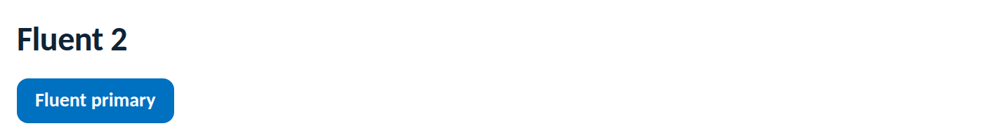

Themes
Teams building on Microsoft's Fluent 2 (Fluent UI React v9, or Fluent UI Blazor) keep Fluent's component behaviour and accessibility, and re-skin it with Novus tokens so everything renders on-brand. The rule is one-directional: tokens.css is the source of truth; Fluent's theme is derived from it, never the other way around.
import "novus-design-kit/tokens.css";
import "novus-design-kit/js/novus-theme.js";Fluent v9 theme values land in CSS custom properties, so you can point them straight at the Novus variables, no hex duplication, and dark mode stays in sync:
import { FluentProvider, webLightTheme } from "@fluentui/react-components";
const novusFluent = {
...webLightTheme,
fontFamilyBase: "var(--font-sans)",
colorBrandBackground: "var(--accent)",
colorBrandBackgroundHover: "var(--accent-hover)",
colorBrandBackgroundPressed: "var(--accent-active)",
colorBrandForeground1: "var(--accent-text)",
colorBrandForegroundLink: "var(--accent-text)",
colorNeutralBackground1: "var(--surface)",
colorNeutralForeground1: "var(--text)",
colorNeutralForeground2: "var(--text-secondary)",
colorNeutralStroke1: "var(--border)",
borderRadiusMedium: "var(--radius-md)",
borderRadiusLarge: "var(--radius-lg)",
};
<FluentProvider theme={novusFluent}>
<App />
</FluentProvider>Because the mapped values are variables, most of the theme re-tunes automatically
when novusTheme.toggle() flips data-theme. For Fluent's own
neutrals, swap the base theme on the same event:
const base = novusTheme.current() === "dark" ? webDarkTheme : webLightTheme;
// re-apply the same Novus overrides on top of the chosen basetokens.css after the Fluent providers so Novus values win the cascade.var(--font-sans), Fluent's Segoe default is off-brand.Rendered from this guide's own sample project, executed and verified on 2026-08-26 against @fluentui/react-components 9.74.

var(--…)), copying hex values forks the brand and breaks dark mode.